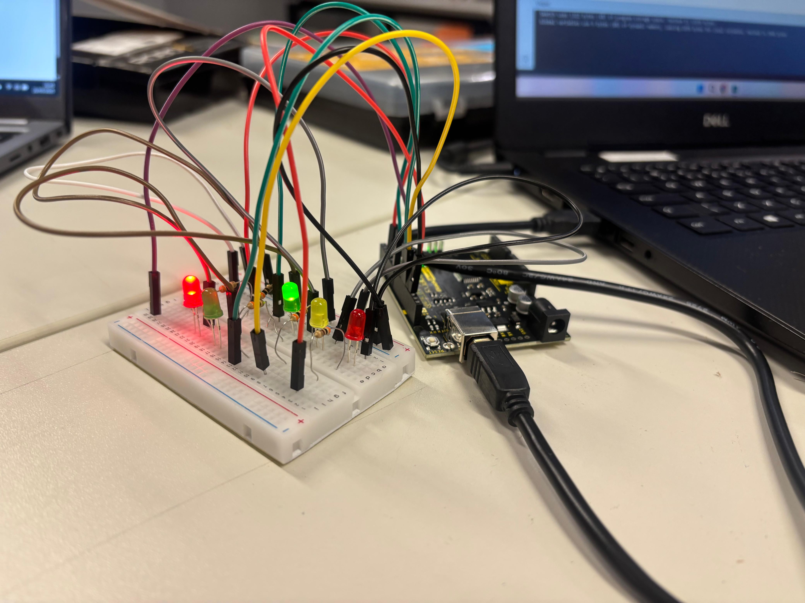

Bem-vindo ao Sinaliza+
Essa é a página inicial do nosso projeto. Aqui você pode conhecer mais sobre o funcionamento do semáforo inteligente e até mesmo construir o seu.
Imagem do Projeto
Sobre o Projeto
Clique aqui para conhecer a motivação e funcionamento
Montagem
Acesse o passo a passo de montagem do semáforo
Código do Projeto
Visualize o código e baixe a pasta com os arquivos
Autores
Conheça os responsáveis pelo projeto